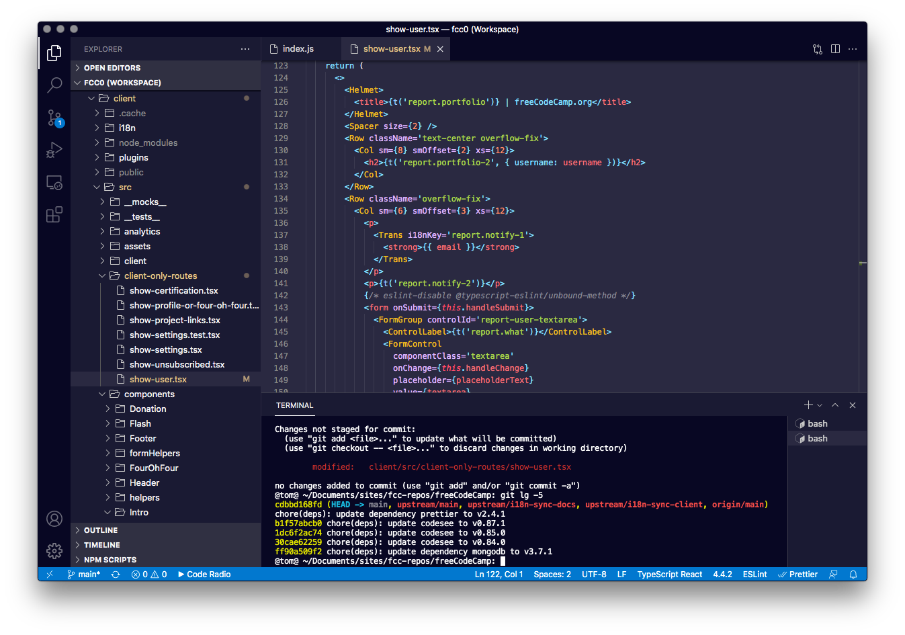

O que aprendi revisando meu próprio código
Na primeira semana, eu revisei os meus próprios codigos e projetos parado, para adquirir mais conhecimento na programação.
Isso mudou completamente o ritmo em qual eu comecei a fazer os novos projetos de escola e profissionais.
O aprendizado principal foi: constância importa mais do que intensidade. Um pouco todo dia rende mais do que muito de uma vez só.
0 curtidas
0 descurtidas